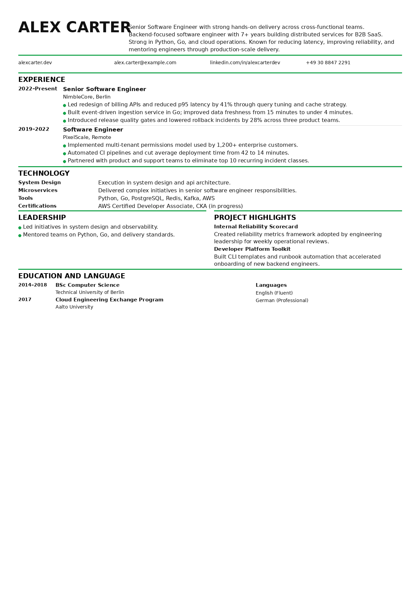

<!DOCTYPE html>
<html lang="en">
<head>
  <!-- Google tag (gtag.js) -->
  <script async src="https://www.googletagmanager.com/gtag/js?id=G-C0D4MCRT80"></script>
  <script>
    window.dataLayer = window.dataLayer || [];
    function gtag(){dataLayer.push(arguments);}
    gtag('js', new Date());

    gtag('config', 'G-C0D4MCRT80');
  </script>

  <meta charset="UTF-8">
  <meta name="viewport" content="width=device-width, initial-scale=1.0">
  <link rel="icon" type="image/svg+xml" href="/favicon.svg">
  <link rel="icon" type="image/png" sizes="32x32" href="/favicon-32x32.png">
  <link rel="icon" type="image/png" sizes="16x16" href="/favicon-16x16.png">
  <link rel="shortcut icon" href="/favicon.ico">
  <link rel="apple-touch-icon" sizes="180x180" href="/apple-touch-icon.png">
  <link rel="manifest" href="/site.webmanifest">
  <meta name="theme-color" content="#0f172a">

  <title>Software Engineer Resume Example & Template | PitchCV</title>
  <meta name="description" content="Learn how to write a software engineer resume that passes ATS filters. Get examples of summaries, skills, and achievements to land more tech interviews.">
  <meta name="robots" content="index,follow">
  <link rel="canonical" href="https://pitchcv.app/examples/software-engineer">
  <meta property="og:type" content="article">
  <meta property="og:title" content="Software Engineer Resume Example & Template | PitchCV">
  <meta property="og:description" content="Learn how to write a software engineer resume that passes ATS filters. Get examples of summaries, skills, and achievements to land more tech interviews.">
  <meta property="og:url" content="https://pitchcv.app/examples/software-engineer">
  <meta property="og:image" content="https://pitchcv.app/assets/examples/software-engineer/preview.png">
  <meta property="og:site_name" content="PitchCV">
  <meta name="twitter:card" content="summary_large_image">
  <meta name="twitter:title" content="Software Engineer Resume Example & Template | PitchCV">
  <meta name="twitter:description" content="Learn how to write a software engineer resume that passes ATS filters. Get examples of summaries, skills, and achievements to land more tech interviews.">
  <meta name="twitter:image" content="https://pitchcv.app/assets/examples/software-engineer/preview.png">
<link rel="stylesheet" href="../../css/style.css">
<link rel="stylesheet" href="../../css/examples-resume-assets.css">
  <script type="application/ld+json">
  {
    "@context": "https://schema.org",
    "@graph": [
      {
        "@type": "Article",
        "headline": "Software Engineer Resume Example & Template",
        "description": "Learn how to write a software engineer resume that passes ATS filters.",
        "author": {
          "@type": "Organization",
          "name": "PitchCV"
        },
        "publisher": {
          "@type": "Organization",
          "name": "PitchCV"
        },
        "datePublished": "2026-03-08",
        "dateModified": "2026-03-08",
        "mainEntityOfPage": "https://pitchcv.app/examples/software-engineer"
      },
      {
        "@type": "BreadcrumbList",
        "itemListElement": [
          {"@type": "ListItem", "position": 1, "name": "Home", "item": "https://pitchcv.app/"},
          {"@type": "ListItem", "position": 2, "name": "Resume Examples", "item": "https://pitchcv.app/examples"},
          {"@type": "ListItem", "position": 3, "name": "Software Engineer Resume Example", "item": "https://pitchcv.app/examples/software-engineer"}
        ]
      }
    ]
  }
</head>
<body>

  <header class="site-header">
    <div class="wrap header-wrap">
      <a href="/" class="logo"><span>PitchCV</span></a>
      <nav class="header-nav">
        <a href="/examples" class="btn btn-outline btn-sm">All Examples</a>
        <a href="/#upload-zone" class="btn btn-primary btn-sm">Scan Resume</a>
      </nav>
    </div>
  </header>

  <section class="example-hero">
    <div class="wrap">
      <p class="example-breadcrumb"><a href="/">Home</a> / <a href="/examples">Resume examples</a> / Software engineer</p>
      <h1>Software Engineer Resume Example</h1>
      <p>Use this guide to structure a software engineer resume that is readable for ATS and persuasive for hiring managers.</p>
    </div>
  </section>

  <main class="example-layout">
    <aside class="example-toc">
      <h2>Table of contents</h2>
      <a href="#what-do-recruiters-check">What recruiters check first</a>
      <a href="#how-to-write-resume">How to write your resume</a>
      <a href="#summary-example">Summary example</a>
      <a href="#experience-sample">Experience sample</a>
      <a href="#skills-section">Skills section</a>
    </aside>

    <article class="example-article">
      <p class="example-keyline">Quick takeaway: simple layout + relevant stack keywords + measurable outcomes.</p>
      <section id="what-do-recruiters-check">
        <h2>What recruiters check first</h2>
        <p>Recruiters scan engineering resumes quickly. They usually look for stack relevance, years of experience, and clear impact in your latest roles.</p>
        <p>If your layout is hard to parse, ATS systems may miss important information. Keep your format simple, readable, and text-based.</p>
      </section>

      <section id="how-to-write-resume">
        <h2>How to write your software engineer resume</h2>
        <p>Start with a short summary, then show experience with measurable outcomes. Use the same technical terms that appear in the target job description when they match your background.</p>
      </section>

      <section id="summary-example">
        <h2>Software engineer summary example</h2>
        <div class="example-snippet">
          <div class="example-snippet-head">
            <span class="example-snippet-label">adaptable summary example</span>
            <button class="copy-btn-lite" type="button">Copy to clipboard</button>
          </div>
          <p>Backend Software Engineer with 4+ years of experience building scalable microservices in Python and Go. Improved API latency by 40% through query optimization and caching strategy. Comfortable with AWS, CI/CD, and production incident response.</p>
        </div>
      </section>

      <section id="experience-sample">
        <h2>Employment history sample</h2>
        <p>Use bullet points that connect your work to business or product results.</p>
        <div class="example-tip">
          <h3>Use this bullet formula</h3>
          <p><strong>Action + context + metric + result.</strong> Example: “Built async ingestion service in Go, reducing event processing time from 12m to 4m and improving data freshness for analytics users.”</p>
        </div>
      </section>

      <section id="skills-section">
        <h2>Skills example section</h2>
        <p>Group skills by category so ATS and recruiters can scan quickly:</p>
        <p><strong>Languages:</strong> Python, Go, TypeScript<br><strong>Frameworks:</strong> FastAPI, Node.js, React<br><strong>Infrastructure:</strong> AWS, Docker, PostgreSQL, Redis</p>
      </section>
      <p>Before applying, run your draft through the <a href="/tools/ats-checker">ATS checker</a> and compare with our <a href="/ats-resume-checklist">resume checklist</a>.</p>
    </article>

    <aside class="example-side">
      <div class="example-score">4.5 ★★★★★</div>
      <div class="example-preview-card">
        
        <a href="/#upload-zone" class="btn btn-primary btn-full">Scan My Resume Free</a>
        <a href="../../assets/examples/software-engineer/sample.pdf" class="btn btn-outline btn-full" download>Download PDF example</a>
        <p class="example-download-note">Role-specific static sample (PDF)</p>
        <p class="example-share">Share this article</p>
        <div class="example-share-icons">
          <span class="example-share-icon">X</span>
          <span class="example-share-icon">in</span>
          <span class="example-share-icon">f</span>
        </div>
      </div>
    </aside>
  </main>

  <footer class="site-footer">
    <div class="wrap">
      <div class="footer-grid">
        <div>
          <h4>Product</h4>
          <ul>
            <li><a href="/#upload-zone">Scan Resume</a></li>
            <li><a href="/pricing">Pricing</a></li>
            <li><a href="/#faq">FAQ</a></li>
          </ul>
        </div>
        <div>
          <h4>Free Tools</h4>
          <ul>
            <li><a href="/tools/ats-checker">ATS Resume Checker</a></li>
            <li><a href="/tools/ats-checker">Resume Keyword Scanner</a></li>
            <li><a href="/tools/ats-checker">Action Verb Generator</a></li>
          </ul>
        </div>
        <div>
          <h4>Resume Examples</h4>
          <ul>
            <li><a href="/examples/software-engineer">Software Engineer</a></li>
            <li><a href="/examples/product-manager">Product Manager</a></li>
            <li><a href="/examples/marketing-manager">Marketing Manager</a></li>
          </ul>
        </div>
        <div>
          <h4>Resources</h4>
          <ul>
            <li><a href="/#faq">FAQ</a></li>
            <li><a href="/blog">Blog</a></li>
            <li><a href="/ats-resume-checklist">ATS Resume Checklist</a></li>
            <li><a href="/ats-resume-mistakes">ATS Resume Mistakes</a></li>
            <li><a href="/resume-keyword-optimization">Resume Keyword Optimization</a></li>
            <li><a href="/about">About</a></li>
            <li><a href="/contact">Contact</a></li>
            <li><a href="/privacy">Privacy Policy</a></li>
            <li><a href="/data-processing">Data Processing</a></li>
            <li><a href="/terms">Public Offer</a></li>
          </ul>
        </div>
      </div>
      <div class="footer-bottom">
        <p class="footer-text">© 2026 PitchCV. Resume optimization for applicant tracking systems.</p>
      </div>
    </div>
  </footer>

</body>
</html>